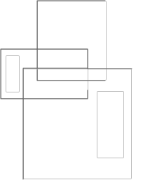
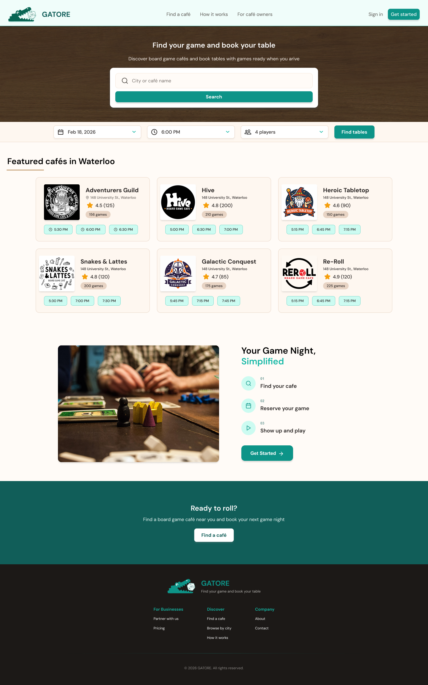
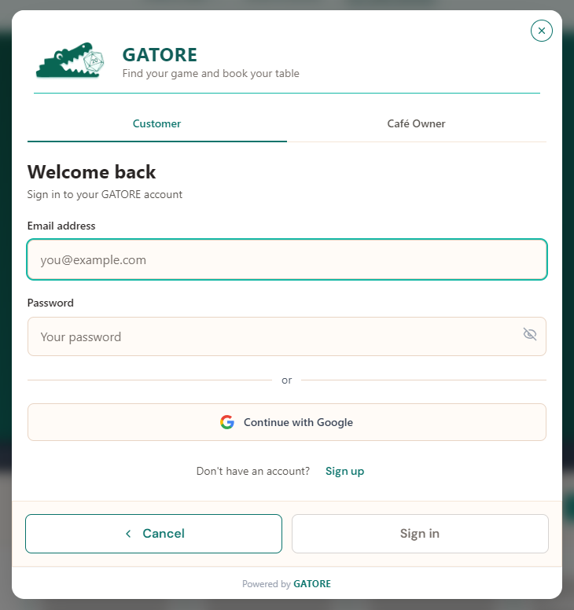

Chloe Feierabend
UX/UI designer and front-end developer
I design friendly products that respect people's time, from the first sketch to the final build.

Featured Projects

GATORE
A reservation and game library platform for board game cafés, with a customer site and a business portal. It took 2nd place at Conestoga's capstone demo day.
Read the case study
Karla Learn
A financial literacy web app that helps international students and newcomers make sense of money in Canada. Built with a team of four in three months.
Read the case studyDecisions I'm proud of
A few calls I made in my projects, and why I made them.
-

Letting groups search by what they're working with
Café game libraries can run past 3,000 titles, and a group with two hours to spare has no easy way to narrow that down.
I built the finder around party size, time available, and complexity. The tools I researched all treated booking a table and picking a game as separate steps, even though groups usually decide both together.
See the research in GATORE -

Courses picked for each person
Showing everyone the same list of courses in the same order ignores what each person actually needs to learn.
I wanted recommendations to work almost like an algorithm. Once someone has a quiz result, the app picks the courses they'd get the most out of first, matched to their spending personality.
See recommendations in Karla Learn -

One sign-in page with Customer and Business tabs
Customers and café owners both sign in, but they're headed to completely different places.
I explored separate buttons and a separate business site first. I went with tabs on one shared page, so if someone lands on the wrong side, switching only takes one click.
See the sign-in page in GATORE -

Animal mascots from students' home countries
We knew from the start that we wanted a spending personality quiz, but labels for spending types can be full of jargon and can make some results sound worse than others.
I worked with my manager to give each personality an animal. "You're a Quilong" is easier to say than a financial label, and it makes the topic feel friendlier. Using animals from the four countries most international students come from made every result feel familiar, and nobody feels judged by their result.
Meet the mascots in Karla Learn
About me

I've always been interested in design, and I learned to code to support that. Now I get to do both. On GATORE and Karla Learn, I led the design and helped build it in React and SvelteKit.
A lot of my work comes back to respecting people's time. On GATORE, that meant letting people book a table without making an account. On Karla Learn, it meant making Canadian finance feel approachable with a quiz people actually wanted to share.
I'm looking for UX/UI and product design roles, and over time I'd like to move toward product management and strategy.
Away from the screen I'm usually rock climbing or making art. I just like to build and create.